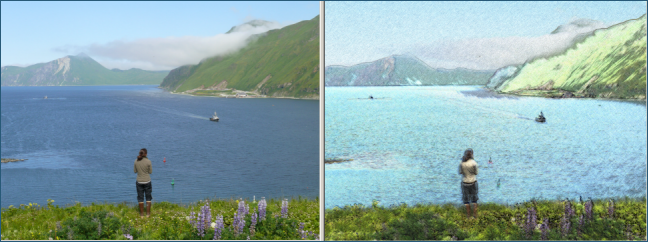

Artistic Effect: Colored Pencil
Previous
Top
Next
The Colored Pencil effect makes a photo look like it was drawn with colored pencils. You can adjust the result by specifying the strength and sample size (in pixels) of the effect.
